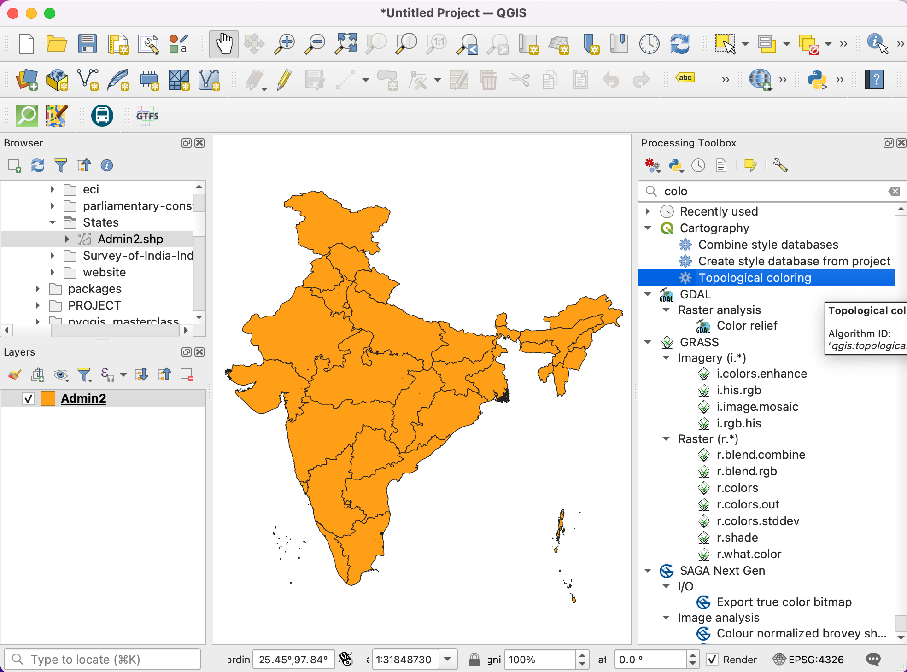
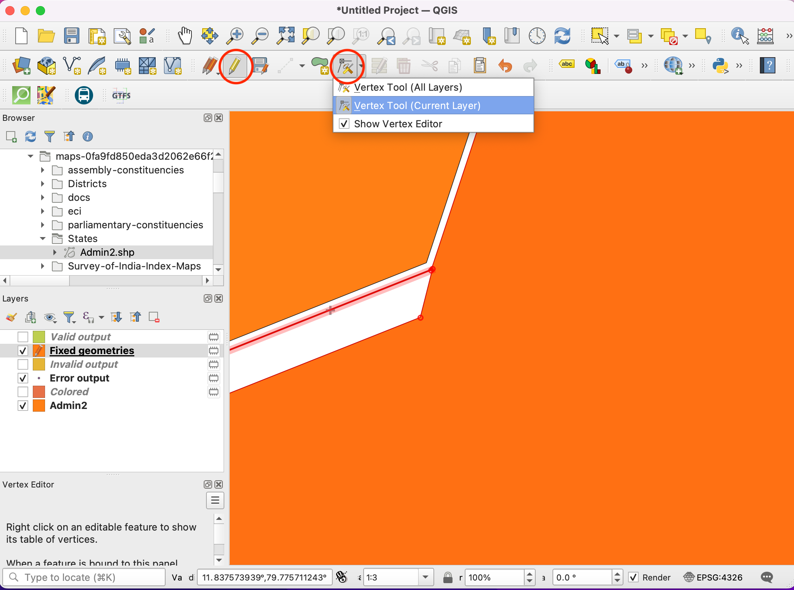
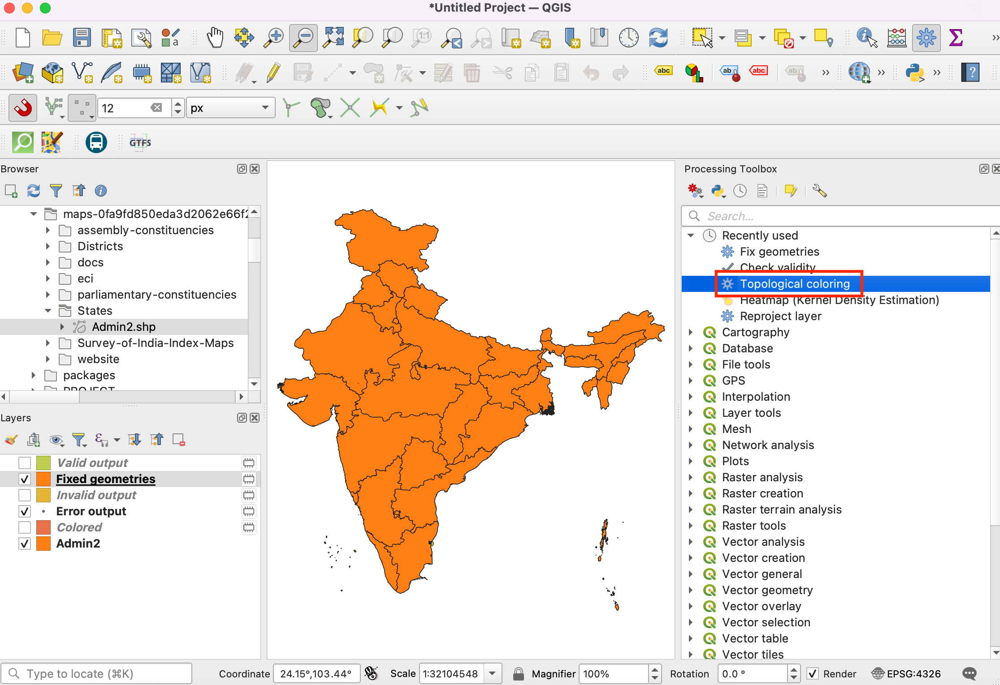
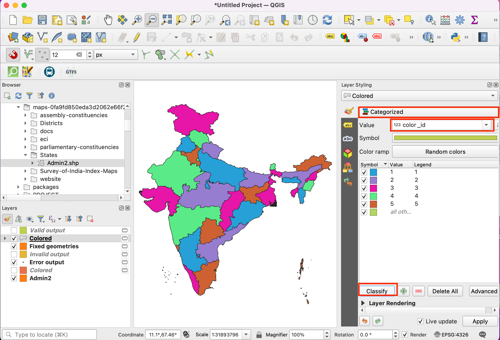

Ujaval Gandhi
Ujaval GandhiManejar Geometrías No Válidas (QGIS3)¶
Cuando se trabaja con capas de datos vectoriales, puede encontrarse con errores de geometría. Estos errores a menudo se vuelven parte de tus datos después de ejecutar geoprocesamiento, digitalización, edición o conversión de datos. QGIS3 viene con herramientas incorporadas y algoritmos para detectar y corregir geometrías no válidas. Este tutorial le mostrará un flujo de trabajo típico para manejar geometrías no válidas en sus datos.
Nota
Los distintos sistemas de software aplican diferentes nociones de validez de la geometría. Pero el estándar principal para el modelo de geometría para su uso en un SIG es el OGC «Especificaciones de Características Simples (SFS) <https://www.opengeospatial.org/standards/sfs>`_. En este tutorial, utilizaremos la biblioteca GEOS para comprobar la validez de la geometría que utiliza este estándar. Este artículo <https://support.safe.com/s/article/invalid-ogc-geometry-examples>`_ da una buena visión general de los errores comunes de geometría definidos por el estándar OGC.
Vista general de la tarea¶
Trabajaremos con una capa de límite administrativo para la India y corregiremos un error de geometría para un polígono de estado.
Otras habilidades que aprenderá¶
Usar el algoritmo de Coloración Topológica para aplicar un esquema de coloración a una capa polígono.
Obtener los datos¶
Datameet provee archivos shape de límites administrativos creados por la comunidad para la India.
Descargue el archivo zip Datameet Spatial Data Repository [~150 MB]. El archivo descargado contiene múltiples carpetas. Extraiga el archivo y use los archivos en la carpeta States/.
Fuente de Datos: [DATAMEET]
Procedimiento¶
Navegue al archivo descargado
India-States.zipen el Explorador QGIS. Expándalo y arrastre el archivoIndia-States.shpal lienzo del mapa.

Verá cargada una nueva capa
India-Statesen el panel Capas. Vaya a .

Intentaremos ejecutar un algoritmo de procesamiento sobre la capa de entrada para demostrar cómo las geometrías no válidas pueden causar problema durante las operaciones de geoprocesamiento. Busque y localice el algoritmo . Doble-clic para iniciarlo.

En el diálogo Coloración topológica, seleccione
India-Statescomo la Capa de entrada. Mantenga todos los parámetros predeterminados y clic en Ejecutar.

Nota
El algoritmo Coloración topológica implementa un algoritmo para colorear un mapa de forma que ningún polígono adyacente tenga el mismo color. Se trata de una técnica cartográfica muy útil y el Teorema de los cuatro colores afirma que bastan cuatro colores para lograr este resultado. Existe una versión de este teorema basada en la teoría de grafos llamada Teorema de los cinco colores. La implementación del algoritmo de QGIS se basa en gráficos, por lo que en la práctica verá que las capas poligonales complejas como ésta requerirán hasta 5 colores.
A medida que el algoritmo se ejecuta, verá una advertencia mostrada en la pestaña Registro. 1 entidad en la capa de entrada tiene una geometría no válida y fue saltada durante el procesamiento. La configuración predeterminada para manejar geometría no válida en le Caja de Herramientas de Procesos está ubicada en y está definido como
Saltar (ignorar) entidades con geometrías no válidas. Este es una buena definición predeterminada, pero si su entrada es grande, puede perder esta advertencia y podría no saber que una entidad de entrada fue saltada. Le podría interesar cambiar el valor aParar la ejecución del algoritmo cuando una geometría no sea válida.

De vuelta en la ventana principal QGIS, verá una nueva capa
Coloredagregada al panel Layers. Note que a la nueva capa le falta un estado que tenía geoemetría no válida. Ahora sabemos que este polígono particular de estado tenía geometría no válida pero no sabemos cual era la causa. Podemos fácilmente averiguarlo. Busque y localice el algoritmo .

En el diálogo Revisar Validez, seleccione
India-Statescomo la Capa de entrada. SeleccioneGEOScomo el Método. Clic en Ejecutar.

Cuando finalice el procesamiento del algoritmo, verá 3 nuevas capas en el panel Capas -
Valid output,Invalid outputyError output. La capaError outputcontiene las ubicaciones y descripción de los errores de geometría. Hagale clic-derecho y seleccione Abrir Tabla de Atributos.

Nota
La documentación QGIS tiene un artículo detallado sobre Tipos de mensajes de error y sus significados que explica las causas de todos los errores.
Verá que el mensaje de error es Autointersección anillo. Seleccione la fila y clic al botón Acerca mapa a objetos seleccionados. A medida que se acerque, verá la causa raíz del error de geometría.

QGIS viene con un algoritmo incorporado para corregir automáticamente errores de geometría. Busque y localice el algoritmo . Haga doble-clic para ejecutarlo.

En el diálogo Corregir Geometrías, seleccione
India-Statescomo la Capa de entrada y clic en Ejecutar.

Se agregará una nueva capa
Fixed Geometriesal panel Capas. Para este momento, el error de geometría está corregido y puede ejecutar cualquier algoritmo de procesamiento sobre esta capa sin problemas. Pero podemos ver que aún existe una brecha inesperada entre los polígonos adyacentes y que puede causar errores topológicos más adelante. Podemos corregir esto también editando el polígono. Clic en el botón Conmutar Edición en la Caja de herramientas Digitalización. Seleccione Herramienta de Vértices y de la lista desplegable seleccioneHerramienta de Vértices (Capa Actual).

Cuando la herramienta de vértice esté activa, haga clic en un vértice para seleccionarlo. Puede presionar la tecla Borrar para borrar un vértice o arrastrarlo para moverlo. Puede mover el vértice de manera que el borde del polígono ahora toque el polígono adyacente.

Una vez listo, haga clic de nuevo en el botón Conmutar Edición y clic en Guardar.

Ejecutemos de nuevo el algoritmo

En el diálogo Coloreado Topológico, asegúrese que selecciona
Fixed Geometriescomo la Capa de entrada. Clic en Ejecutar.

Verá que el algoritmo se ejecuta sin errores y que se agrega una nueva capa
Coloredal panel Capas. Note que el algoritmo no asigna color a la capa misma, pero funciona agregando una nueva columna llamadacolor_idpara cada polígono que puede ser usada para asignar un color único que es diferente que los polígonos adyacentes. Seleccione la capaColoredy haga clic en el botón Abrir el Panel de Estilo de Capa.

Seleccione el representador
Categorizadoy la columnacolor_idcomo el Valor. Clic en Clasificar. Ahora verá el mapa coloreado de manera que los polígonos adyacentes tienen colores diferentes.

If you want to give feedback or share your experience with this tutorial, please comment below. (requires GitHub account)